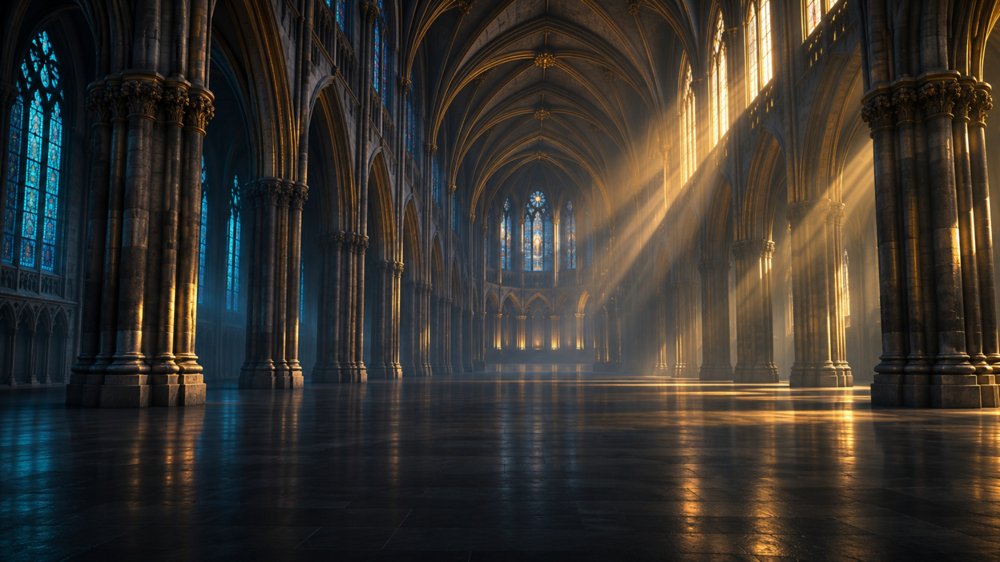
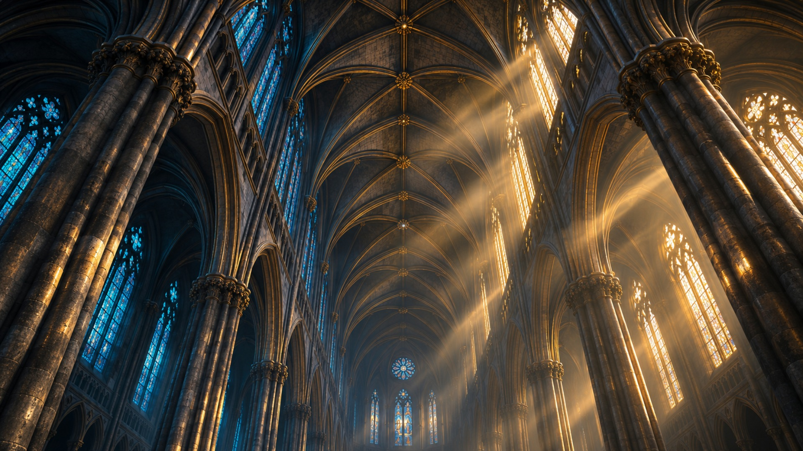
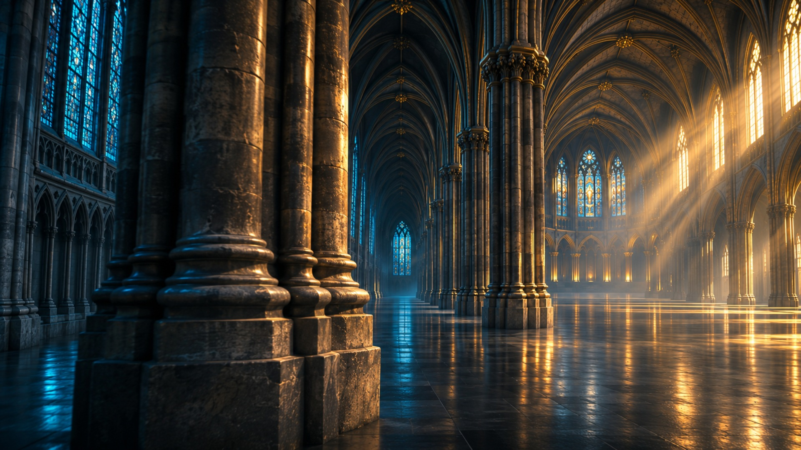

CINEMATIC CONCEPT / 90 SECONDS
波の大聖堂
大聖堂への導入から、二曲線・交点の解析・金色の領域への接近・積分計算までをつなぐ90秒版です。
交点 π/4、5π/4 を求め、囲まれた部分の面積 S = 2√2 にたどり着きます。
青白：y = sin x紫：y = cos x金：交点の間に囲まれた領域 S
対象の領域：π/4 ≤ x ≤ 5π/4 ／ 面積 S = 2√2
大聖堂の3つの視点を見る


